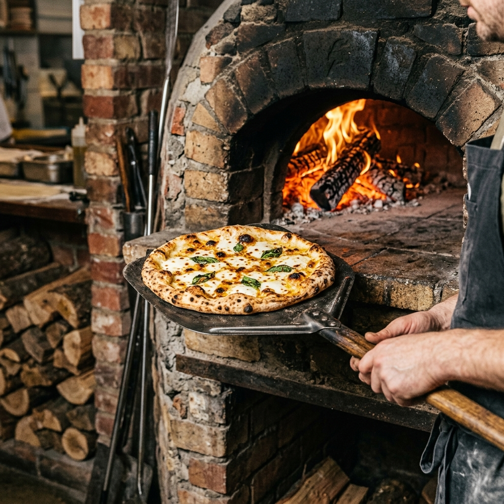
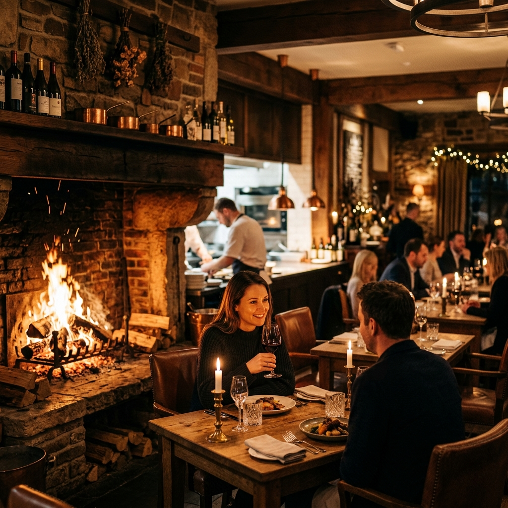
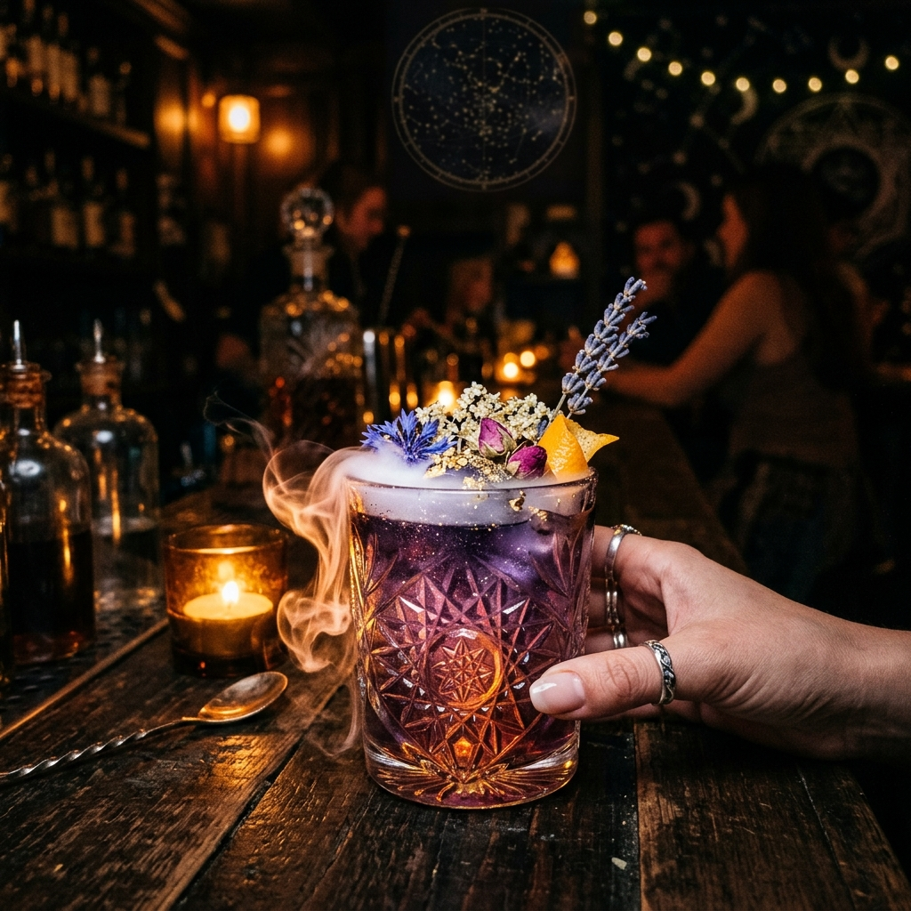

Fire. Food. Atmosphere.
Taste the oak firewood finish in our signature entrees, shareables, and botanical craft cocktails in South End Charlotte.

Taste the oak firewood finish in our signature entrees, shareables, and botanical craft cocktails in South End Charlotte.
Every dish is touched by live oak fire, elevating local seasonal ingredients into unforgettable dining moments.

Slow-braised short rib, parsnip purée, charred broccolini, and dark red-wine reduction.

House-baked sourdough flatbread, smoked sea salt, and whipped orange blossom honey butter.

Our central oak wood-fired hearth is the heartbeat of Orbit & Ember. Executive Chef Julian Reyes and our culinary team craft every plate over open flames, building deep caramelized flavors and rich aromas.
Read Chef Julian's Story →
From the fiery Solar Flare cocktail with blood orange and smoked salt to our velvet Event Horizon Espresso Martini, our bar program pairs celestial inspiration with house-made infusions and smoked ice.
Browse Drinks Menu →
"Hospitality is the warmth created when fire, food, and people come together in harmony."— Mara Ellison, Owner